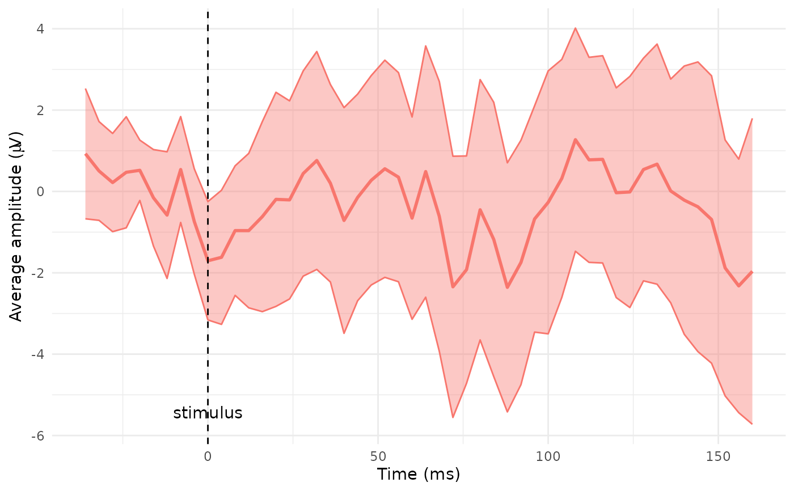
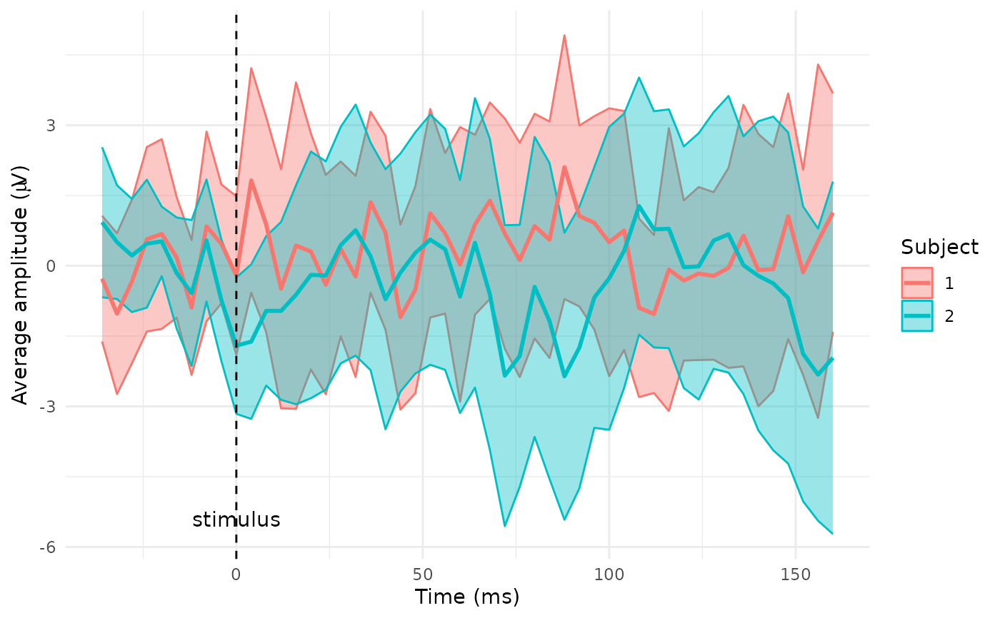
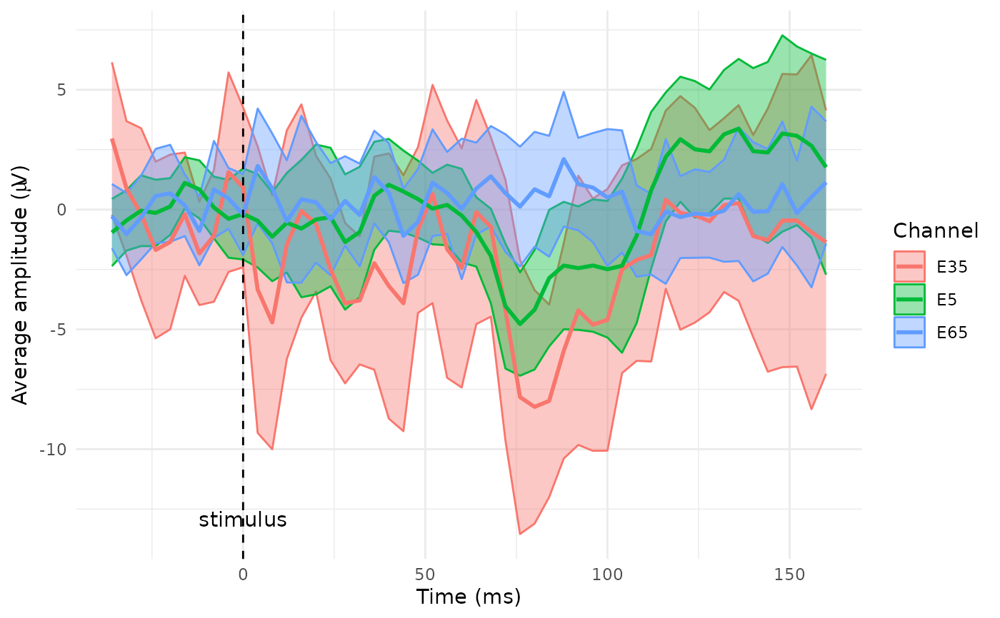

Plot time curve of average EEG signal with confidence interval
plot_time_mean.RdPlot a time course of the average EEG signal amplitude with pointwise confidence intervals (CIs), colour-coded by a user-defined grouping variable such as experimental condition, subject or group. If the condition_column is NULL, all observations are treated as a single condition.
Usage
plot_time_mean(
data,
condition_column = NULL,
FS = 250,
t0 = 1,
transp = 0.4,
y_limits = NULL,
label_0ms = "stimulus",
label_offset = c(0, 0),
legend_title = "Condition"
)Arguments
- data
A data frame, tibble or a database table with input data to plot. It should be an output from
compute_meanfunction or an object with the same structure, containing columns:timewith labels of time points andaverage,ci_low,ci_upwith values of average signal and lower and upper CI bounds.- condition_column
Character string specifying the name of the column used to define conditions for plotting. If
NULL, all observations are treated as a single condition.- FS
The sampling frequency. Default value is 250 Hz.
- t0
Index of the zero time point, i.e. point, where 0 ms should be marked (most often time of the stimulus or time of the response).
- transp
A numeric value between 0 and 1 controlling the transparency of the confidence ribbon (corresponding to
alphaparameter in geom_ribbon function).- y_limits
A numeric vector of length two, specifying the minimum and maximum y-axis limits. Defaults to
NULLfor plot limits determined according to input data.- label_0ms
Character string for the annotation label at the 0ms mark. Default is
"stimulus".- label_offset
A numeric vector of length two to offset the stimulus label. The first value indicates a horizontal shift, the second a vertical one. Default is
c(0,0)for no shift.- legend_title
Character string specifying the legend title shown in the plot. Default is
"Condition". For all observations treated as a single condition (condition_column = NULL) is plotted no legend.
Value
A ggplot object showing the time course of the average EEG signal with pointwise confidence intervals.
Details
The output in the form of a ggplot object allows to easily edit the result image properties.
See also
compute_mean, interactive version of time plot: interactive_waveforms
Examples
# Plot average signal with CI bounds from the sensor E65 excluding outlier epochs (14 and 15)
# for subject 2 - part b) and for the both subjects treated as conditions - part c)
# a) preparing data
# a1) extract required data
edata <- pick_data(epochdata, sensor_rg = c("E65"), epoch_rg = 1:13)
# a2) baseline correction
data_base <- baseline_correction(edata, baseline_range = 1:10)
# a3) average computing
data_mean <- compute_mean(data_base, amplitude = "signal_base", type = "point")
# b) filter subject 2 and plot the average line with default settings
# (the whole dataset treated as one condition, no legend plotted)
data_mean2 <- data_mean |>
dplyr::filter(subject == 2) # or use pick_data(data_mean, subject_rg = 2)
plot_time_mean(data = data_mean2, t0 = 10)

# c) plot the time course by subject (treated as a condition)
plot_time_mean(data = data_mean, condition_column = "subject", t0 = 10, legend_title = "Subject")

# Plot average signal with CI bounds for subject 1 from three chosen sensors
# preparing data
edata <- pick_data(epochdata, subject_rg = 1, sensor_rg = c("E5", "E35" ,"E65"),
epoch_rg = 1:13)
data_base <- baseline_correction(edata, baseline_range = 1:10)
data_mean <- compute_mean(data_base, amplitude = "signal_base", type = "point")
# plot the time course by sensor (channel)
plot_time_mean(data = data_mean, condition_column = "sensor", t0 = 10, legend_title = "Channel")
